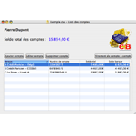
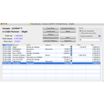

Présentation de Comptes Bancaires
L'application Comptes Bancaires permet de créer et de manipuler des documents gérant des comptes bancaires. La fenêtre principale d'un document est la fenêtre de liste des comptes. Pour chaque compte, une fenêtre de détail peut être ouverte.
Fenêtre de liste des comptes
|
|  |
Cette fenêtre présente les informations suivantes :
- Le nom et le prénom du titulaire des comptes
- Le solde total de l'ensemble des comptes (somme des soldes réels)
- La liste des comptes (avec leurs soldes réel et banque)
Cliquez sur un lien ci-dessous pour en savoir plus :
 Gestion de la liste des comptes
Gestion de la liste des comptes
Imports / Exports
|
Fenêtre de détail d'un compte
|
|  |
Cette fenêtre présente les informations suivantes :
- Le numéro du compte
- Le nom de la banque
- Le solde réel (solde initial du compte plus somme des crédits moins somme des débits, en tenant compte de tous les mouvements)
- Le solde banque (solde initial du compte plus somme des crédits moins somme des débits, en ne tenant compte que des mouvements pointés)
- Le solde des cartes bleues en cours (somme des débits de tous les mouvements de type Carte Bleue non pointés)
- La liste des mouvements
Cliquez sur un lien ci-dessous pour en savoir plus :
Gestion d'un compte
Imports / Exports
|